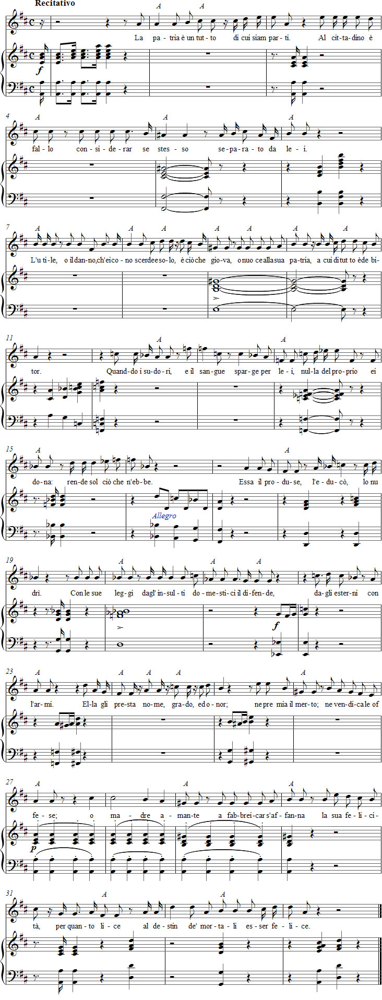

Vaccaj: Tehtävä 14
Kuuntele äänite
Nuotit

Sanat
Il recitativo
Resitatiivi
josta olemme osia.
Kansalaisen on virhe
pitää itseään siitä erillisenä.
Hyöty tai vahinko,
joka hänen täytyy tuntea,
on ainoastaan se kaikki,
mikä auttaa tai vahingoittaa
hänen isänmaataan,
jolle hän on kaikesta velallinen.
Kun hän vuodattaa sen puolesta hikeä tai verta,
mitään omastaan hän ei anna,
palauttaa vain sen, mitä on saanut.
Isänmaa on hänet synnyttänyt,
hänet kasvattanut, hänet ravinnut.
Se puolustaa häntä laeillaan kotoisilta loukkauksilta,
ulkoisilta armeijoillaan.
Se lainaa hänelle nimen,
arvon ja kunnian, palkitsee ansion,
kostaa loukkauksen ja kuin rakastava äiti ponnistelee
edistääkseen hänen onnellisuuttaan
siinä määrin kuin
kuolevaisen kohtalo voi olla onnellinen.
Esitysohjeet
Tässä tehtävässä harjoitellaan resitatiivia. Tavoitteena on ymmärtää sanat ja sisältö ja tulkita ne selkeästi kuulijoille.
Metastasion runossa puhuu Atilius Regulus -niminen sankari, joka tekee vaikutuksen suurenmoisella ulkoasullaan vaikuttamatta kuitenkaan komeilunhaluiselta. Hän on luonteeltaan pohdiskeleva, hänellä on auktoriteettia, mutta samalla hän on ystävällinen ja hillitty. Atilius Regulus yrittää vakuuttaa poikaansa siitä, että oman hengen uhraaminen maansa hyväksi on äärimmäisen kunnioitettavaa.
Ohjeita harjoitteluun
Suuresta tekstimassasta huolimatta jokaisen sanan oikea ääntämys pitää juurruttaa, samoin oikea ymmärtäminen. Tämän vuoksi voi olla järkevää jakaa harjoitus kolmeen osaan. Parasta on aloittaa 11 ensimmäisellä tahdilla, sen jälkeen on hyödyllistä jatkaa 6 viimeisellä, ja sitten voikin vain toivoa, että lauluopiskelija on kiinnostunut näiden väliin jäävistä tahdeista.
Kannattaa kokeilla seuraavaa työtapaa:
- Lähtökohdaksi otetaan Vaccajn fraseeraus ja teksti luetaan normaalilla äänellä oikeita sanapainoja harjoitellen.
- ”Puhelaula” teksti samalla kuivalla tavalla ”melodialtaan” mutta ilman kaikkia etuheleitä.
- Lue teksti uudelleen mahtipontisen messuavalla teatteriäänellä. Pane merkille, että tällainen voi johtaa nuottikuvan appoggiaturaan, johon sisältyvät ”sisäänsävelletyt” etuheleet.
- Huomaa myös, että tämä on se silta, joka auttaa laulajaa yhdistämään puheen ja laulun. Pariisin konservatorion laulukoulun mukaan resitatiiveissa täytyy olla jatkuvasti keskittynyt siihen, että laulaja laulaa ja puhuu yhdellä kertaa ja että näitä toimintoja ei saa koskaan erottaa toisistaan.
- Tee lopuksi vain pieni harjoitus teatteriäänellä ”laulamisesta” ja esitä sillä tavalla koko resitatiivi kaikkine appoggiaturoineen.
Ajatuksia tulkinnasta
Sekä puheen että laulun tempon täytyy olla niin rauhallinen, että fraasin lyhyys ei vaikuta perusteettomalta. Tässä voi ajatella Belgiojosoa, jonka mukaan vakavat resitatiivit tulee esittää ylhäisesti suurella tyylillä ja syvällä tunteella. (Bufforesitatiivit tulee sitä vastoin tehdä kepeän liikkuvasti ja räiskyen.) Hän on samaa mieltä kuin Hauser siitä, että laulajan tulee samaistua dramaattiseen tilanteeseen, jotta hän voisi lausua resitatiivin oikein.
”Laulettaessa” ei tempo kuitenkaan saa olla niin hidas, että laulu/laulaja luisuu puhtaaseen lauluun. Poikkeuksen tekee fraasi e madre amante tahdeissa 27–29, joka on joukossa oleva arioso.
Jotta laulaja uskaltaa sekoittaa normaalin lauluäänen ”puheen” kanssa, hänellä on oltava hyvin selkeä käsitys melodiasta.
Etuheleen jälkeistä säveltä ei saa korostaa eikä pidentää.
Forshufvud, G. 1994. Con lieve fiato. Lärarhandledning till Nicola Vaccajs Metodo pratico. Göteborgs universitetet.